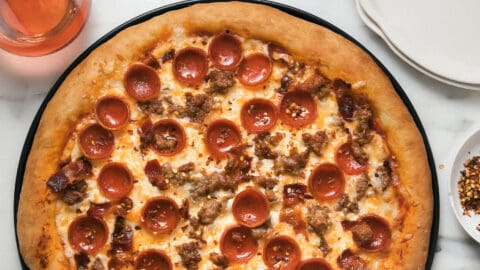

Pizza Recipe

The MEATLOVERS Pizza!
A meat lovers pizza is a rich, savory variation of traditional pizza that’s loaded with a variety of hearty meats. It typically features a base of tomato sauce and melted cheese, topped with ingredients like pepperoni, sausage, bacon, ham, and sometimes ground beef. The combination of these meats creates a bold, smoky, and slightly salty flavor profile that appeals especially to those who enjoy protein-heavy meals.
The crust can range from thin and crispy to thick and chewy, depending on preference, and the cheese—usually mozzarella—helps balance the intensity of the toppings. Meat lovers pizza is known for being filling and indulgent, often served as a comfort food or a crowd-pleasing option at gatherings. Overall, it’s a flavorful, satisfying choice for anyone who enjoys a hearty twist on classic pizza.
Ingredients needed for this dish!
- Pizza dough (store-brought or homemade)
- Flour
- Tomato pizza sauce
- Mozzarella
- Pepperoni
- Italian sausage
- Ham
- Ground Beef
Step by step guide
- Set your oven to 475
- Cook sausage in a pan until browned
- Cook bacon until crispy, the chop it
- Roll or stretch your pizza dough into a circle
- Place it on a baking sheet or pizza pan
- Spread a thin layer of tomato sauce over the dough
- Leave a small border around the edges for the crust
- Sprinkle a generous layer of shredded mozzarella
- Evenly distribute the meats you have prepared
- Bake for 10-15 minutes
- Its ready when the crust is golden brown and the cheese is melted
You have now made your MEATLOVERS PIZZA!!
Home Page